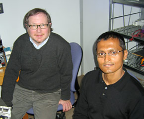

News Archives : 2006 : A New Mechanism for Long-term Memory
by Sam Kunes
January 13, 2006

Authors Sam Kunes and Shovon Ashraf
It has long been known that long-term memory requires the synthesis of new proteins, a feature of memory common to vertebrates and invertebrates. Of special interest is protein synthesis localized to the synapse, because this is thought to confer selective synaptic change and hence the stable modification of a neural circuit. But it is not known how protein synthesis is deployed across the nervous system or contributes to the formation of a particular memory. Nor is it known how protein synthesis is regulated at synapses during the encoding of a memory. We have provided a first glimpse of protein synthesis at synapses as an animal forms a long-term memory, and discovered a new mechanism that regulates it. These discoveries are reported in our paper published in the journal Cell.
In this work, postdoctoral fellow Shovon Ashraf, with help from Harvard College undergraduates Anna McLoon and Sarah Sclarsic, used fluorescent reporter constructs to visualize synaptic protein synthesis as a fly forms a long-term memory. First, they found that the formation of a particular memory (an association between an odor and electric shock) was correlated with protein synthesis at specific synapses, as well as the induction of mRNA transport to these synapses. Second, they discovered a biochemical pathway that determines if and where synaptic protein synthesis occurs. This pathway, which involves the short regulatory RNAs called microRNAs and a protein complex called RISC, interacts with mRNA at synapses to regulate the protein synthesis that is associated with forming a stable memory. Specifically, the proteolytic complex known as the Proteasome degrades a RISC component called Armitage, permitting synaptic protein synthesis to occur.
What is most exciting about these discoveries are the new questions that arise, and what the answers could tell us about the storage of memories. Can we build a complete map that offers a detailed view of which synapses synthesize proteins for different memories? Can we build a correlated map that tells us where synthesis is required, and for which proteins? These maps could provide a detailed knowledge of how memories are stored. We are also interested in the temporal characteristics of synaptic protein synthesis. Are synapses marked by continued synthesis for long periods of time, and if so, what mechanisms make synaptic change persistent? We also believe that our efforts to date have only scratched the surface of a biochemical understanding of the role of RISC and microRNAs at the synapse, leaving many elements of the regulatory puzzle yet to be filled in. Does this regulatory mechanism act independently at different synapses that belong to the same neuron? The answer has important implications for understanding how circuits can be altered. Last, we have not overlooked the clinical implications of these studies. It is likely that this mechanism controls protein synthesis at mammalian, perhaps human, synapses. The potential to aid memory formation in patients with neurodegenerative disorders, like Alzheimer’s disease, is clear. We thus view the studies reported in our current paper to be very much the beginning of an important endeavor.
Read related article in the Harvard Gazette